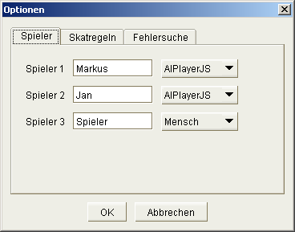
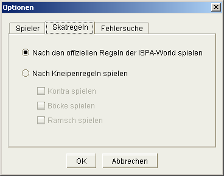
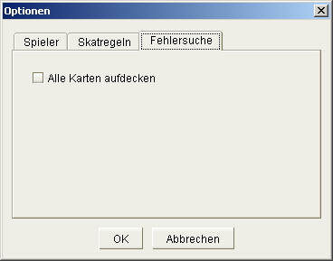

The options dialog is available
When starting a new skat round, all options can be modified according to the user's choice. While a skat round is running, only a smaller subset of the options is available for change, as is stated in the individual panels.
The panel's title should be changed from "Players" / "Spieler" to "Game" / "Spiel".
In this panel, the players for the skat game are defined. Each player has a name and a certain player type. For the first two players only AI players can be selected. The third player can either be a human player or another AI player.
As a future option, "remote" might be available as the player type, which means that another human player can participate over a TCP/IP connection.
At the start of a skat round, all options can be changed. During a skat round, only the player names should be subject to change, but not the player types (as some future AI players might build on the behaviour of the other players).
Why not the player types? You could say: "Hmm, I'm too bad now and have to go for a drink, let the computer player take over and let's see if it can win this skat round. ;o) But maybe it's too hard for a computer player to take over, because of its internal statistics it produces during a skat round… Exactly...
In the rules section of the options dialog, the basic rules can be set for the game.
In version 0.3, this dialog is not really available, as depicted in the screenshot below:
Playing by the official rules disables all individual rules. Cheat/debug mode, however, can still be selected in the debug section.
When playing by individual rules, the following options can be selected:
There is also a "set default" button in this panel, which sets some standard rules for individual games:
The ruleset cannot be changed while a skat round is running.
This is a new tab for version 0.4 called "General" / "Allgemeines".
This section offers all the general settings, which do not have an immediate effect on how the game is played.
In a text box, the number of rounds to be played in the skat round can be defined. The default value is "12".
The number of rounds can be changed during the game. However, the number cannot be set to a value lower than the current count of rounds.
In addition, by checking the "unlimited" box behind the field, the number in the text box becomes inactivated (but the value is kept) and an unlimited number of skat rounds is played.
For user convenience, the delay time after the individual tricks can be set in seconds (in a range from 0 to 60). Alternatively, the user can use a check box to wait for an explicit click after each trick. This option can be changed at any time while the game is in progress.
The language is also selectable in this section by using a drop down box.
The user can also define, whether every game has to be played until the last trick or if a game can be shortcut if one player gets all cards left on the hands of all players. (planned for release 0.5 or later)
Some path definitions for saving the options and the skat lists should be available on the general tab.
(saving games is currently planned for release 0.5 or later)
The final panel gives some cheat and debug features. The options in this panel are only available when cheat mode is allowed in the general options.
The following cheat options are available:
Some options interact with gameplay in a non-obvious way. These interactions are defined in this section.
This dialog is supposed to show all tricks that have been played in the current game. Its function depends on the option set in Panel 4. In the "regular" mode (i.e. official rules) the button is only enabled, as long the player doesn't have played a card in the current trick (according to the official skat rules). Furthermore, it then only shows the very last trick, instead of the complete trick history.
Only when JSkat is in cheat/debug mode and the corresponding option is checked, all previous tricks from the current game are available.